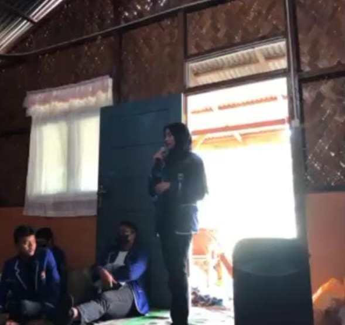
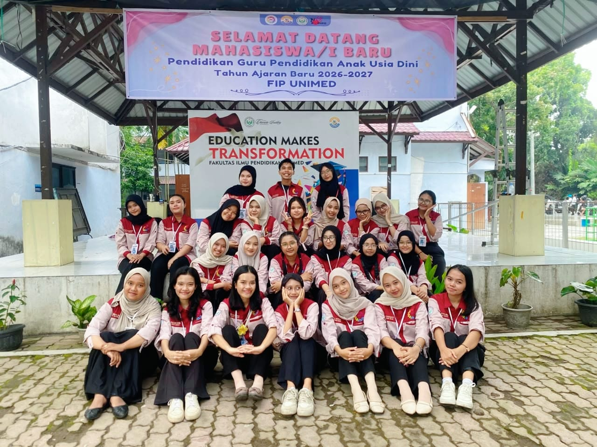
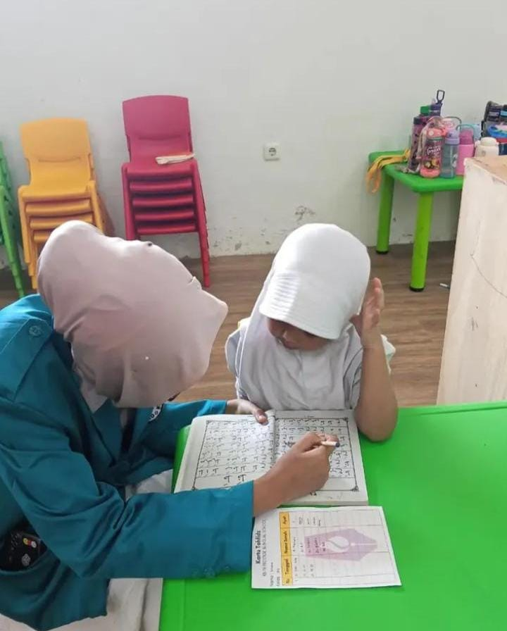
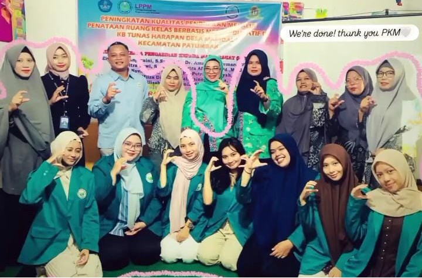

My Journey in Pictures
A curated photographic gallery documenting my active involvement across schools, university, teaching, and research.

High School Organization
Memorable moments participating in the Student Council (OSIS - Nutrition and Health Division) and Youth Red Cross (PMR) at SMA Negeri 3 Medan, where I nurtured my teamwork and public speaking foundations.
Learn about High School →
IMA PGPAUD Activities
Collaborating with fellow department student association members, organizing university academic seminars, and coordinating department programs across two active leadership periods.
View University Experience →
Teaching Internship
Hands-on teaching practicum at Prestige Bilingual School Kindergarten Medan—creating engaging learning media, accompanying young learners, and utilizing everyday English in the classroom.
Read Teaching Journey →
Research & Academic Activities
Proposal presentation and collaborative academic milestones under the student research grant program, with our research article scheduled for publication in December 2026.
Explore Research Details →